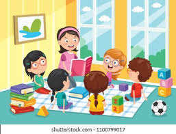

Babies (3 months – 1 year)
We welcome little ones from as early as 3 months old. Our baby room is warm, safe, and nurturing — with soft play areas, cribs, gentle music, and trained caregivers.
We follow feeding, sleeping, and changing routines provided by parents to make babies feel secure and loved like they’re at home.
Toddlers (1 – 2.9 years)
Toddlers explore their world through movement and curiosity. We guide them through:
- Early communication (pointing, naming, singing)
- Motor skill development (walking, stacking, coloring)
- Social learning (taking turns, expressing emotions)
- Potty training support where applicable
All activities are play-based and bilingual (English and Setswana/Sepedi), helping with early speech and cognitive growth.
Preschoolers (3 – 6 years)
Our preschool program gets children ready for Grade R. We focus on:
- Language development (stories, rhymes, conversations)
- Numeracy basics (counting, sorting, shapes)
- Creativity (drawing, painting, role-play)
- Emotional intelligence (problem-solving, empathy)
Daily routines include structured lessons, outdoor play, music, and rest periods. Our small group sizes allow personal attention to every child’s development.
Aftercare (school-age children)
We also support older siblings after school. Our aftercare includes:
- Safe pick-up from nearby schools (if arranged)
- Supervised homework time
- Light meals and snacks
- Indoor/outdoor games to relax after a school day
Night Shift Care
For parents who work late or in emergencies, we provide trusted night-time care by arrangement. Children enjoy dinner, calming bedtime routines, and sleep in a secure environment until pickup.